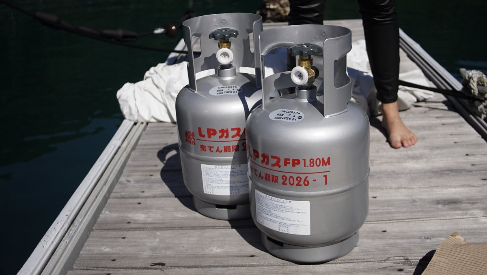

lpg
In our galley, we use LPG (Liquefied petroleum gas) to cook by way of a gimballed stove. While not an ideal fuel, there are few alternatives for sailboats. In 2022, we replaced all of the parts of our LPG system, and we built on our gimballed stove, for more information see lpg refit, gimballed stove and lpg fume detection system.
How long does a tank last? We've carried both a 9 kg (20 lbs) and a 5 kg (11 lbs) tank. A 5 kg tank can last us two months, less if we bake a lot, and a 9kg (20 lbs) tank which can last us anywhere between 4-5 months. The tank will not last as long if it is cold outside(3 1/2 months), because we boil water often for tea, or to prepare warm foods.
Tank refills. Some ports offer refill services on the dock, others require that you walk the tank to a nearby store. Many places will only do tank swaps(more expensive than filling a tank, but more common in places like Canada). We carry the tank by foot to refill it most times, or ask friends for a ride when the refill/swap station is out of range. Some marinas in other countries will handle the transport for LPG tank refills for mariners(true in La Paz Mexico). We have carried an 11 lbs tank in a backpack in the past, but it is a bit stressful to carry a pressurized tank on your back. Many countries don't want to refill foreign tanks, especially if they have an aged appearance. Throughout our travels we had to give up 3 tanks, 1 in New Zealand and 2 in Japan.
Our setup. Our main tank lives in its own locker aft of the boat, with a drain hose leading down and off the stern. In the event of a leak, the gas will escape from this hose rather than filling the compartment and slipping down into the bilge. Our boat has a solenoid valve with a gas shut off that we can operate from inside the cabin, it is fitted with a sniffer and alarm to detect leaks. For safety, solenoids close in the event of a power failure. An LPG tank should never be stored inside. We store our secondary tank off the aft rail on a little platform we built(2023 update: we no longer require a secondary tank, we use a small alcohol burner as a backup).
Tank compability. In 2022, we switched out all of the old components of our propane system (regulator, solenoid, pressure gauge and hoses) because they were thoroughly rusted (solenoid and pressure gauge, especially). The pigtail that connects to the propane tank though is different, and screws onto the mouth of the valve from the outside, rather than from the inside, unlike our older connector. Our Japanese tanks can only take an inside connection. Be mindful of this when changing systems, industry standards change.
Tank swaps. Many countries use a 'tank swap' system. You bring your tank when it is finished and swap it with another. This is a good system because the tanks are often made of painted steel and can corrode over time, especially if exposed to salt air. When swapped at a store, the steel tanks are re-painted and checked for problems, eliminating the need to do those checks yourself.
Keeping your own propane tank. If you prefer to have your own tank, a good alternative are aluminum or fibreglass tanks—although many places won't want to fill fibreglass tanks. If using your own tank for a while, you might run into issues with an overfilled tank (it happened to us). When exposed to the sun on a hot day (if the tank is outside), the gas inside of the tank expands and will open the pressure release valve. Some LPG will escape from the valve to relieve the pressure in the tank. Don't handle the tank as it is off gassing. If the smell bothers you, pour some cold water over the tank to help it cool faster. The pressure release valve will close when the pressure has lessened, but may not with a faulty tank. To check for leaks on your tank, pour some soapy water over the tank. Bubbles will form around the leak.
Troubleshooting
LPG burner has an orange flame? A regular propane flame ought to be blue, an orange flame indicates incomplete combustion, there are many reasons why this can happen but a common one is debris clogging the burner. For debris, remove the burner and check for particles.
LPG flame sputtering? Check the burner for debris, accumulations of carbon which might be clogging the burner. Other reasons include low propane pressure, faulty gas valves airflow obstruction, etc. Always check for clogging in the burners first, it happens a lot and it is an easy fix.